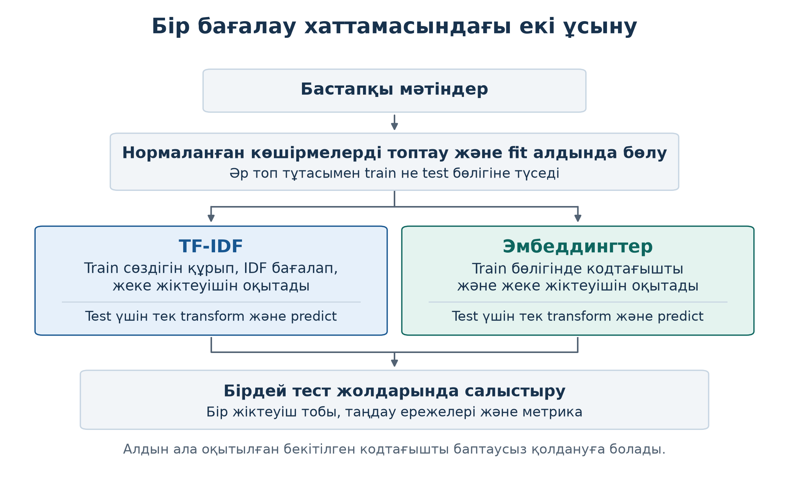
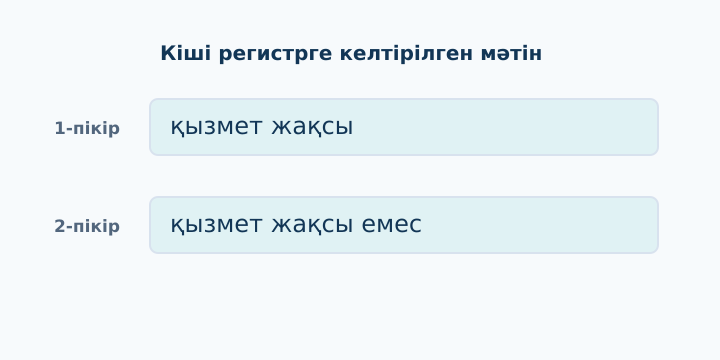
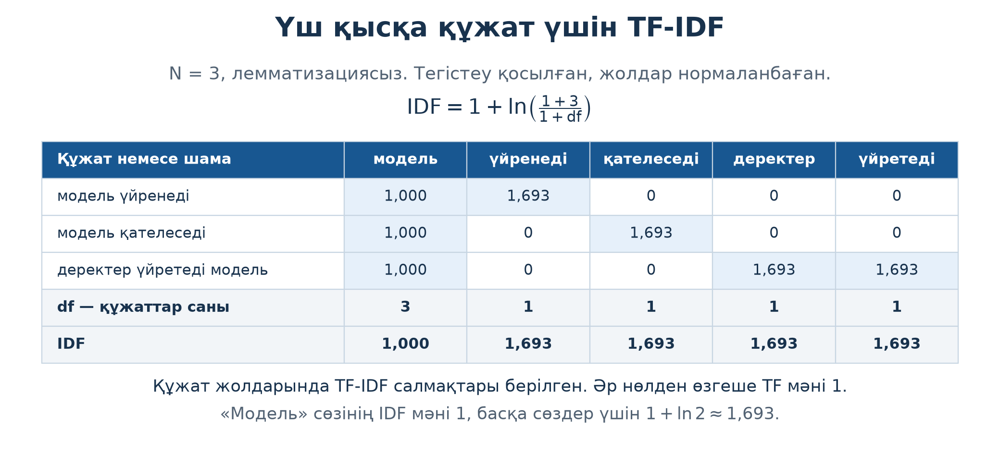
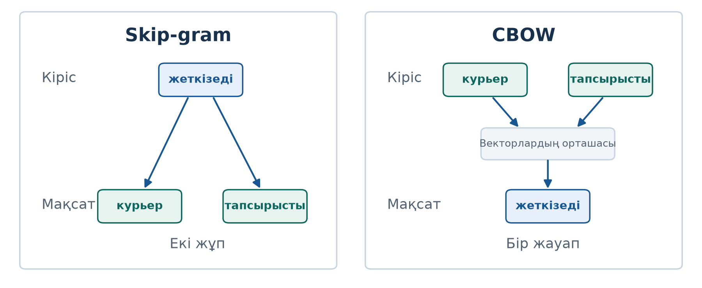
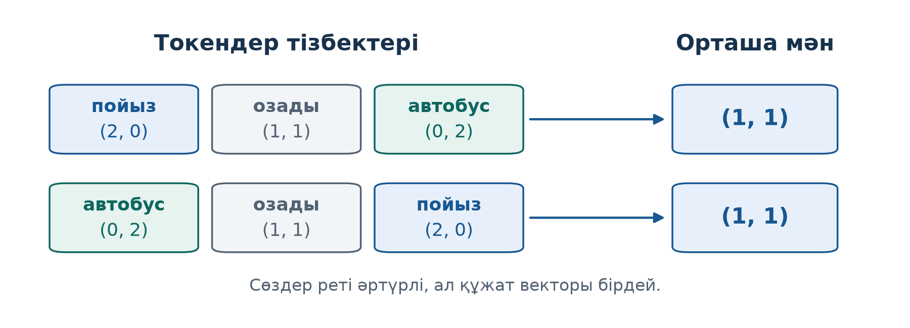
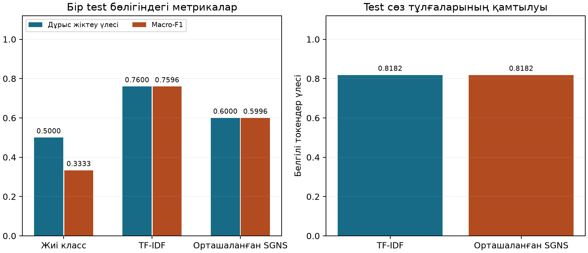
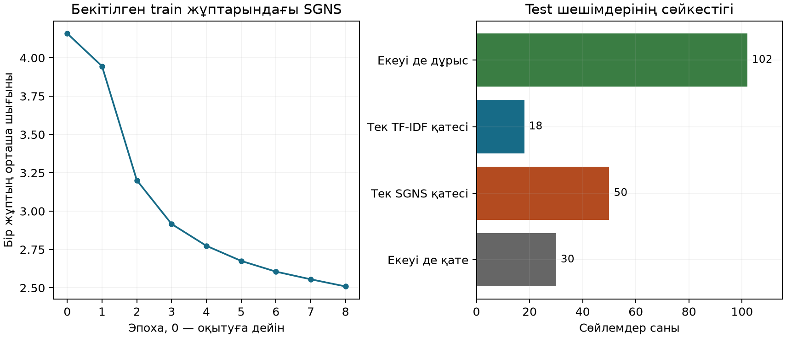

12-тарау. Мәтіндік деректерге арналған машиналық оқыту және векторлық ұсынулар
12.1 Тақырып бағдары
Қолдау қызметіне түскен екі өтініште «қолжетімділік жарамды» және «қолжетімділік жарамды емес» деп жазылған. Сөздердің барлығы дерлік сәйкес келеді, ал қажетті әрекет өзгереді. Дайындау кезінде қысқа немесе жиі кездесетін сөздер алынып тасталса, айырмашылық оқытуға дейін жоғалуы мүмкін. Тек жеке сөздер қалдырылса, модель «емес» сөзін көреді, бірақ оның «жарамды» сөзімен тікелей байланысын жоғалтады. Ұсыну тәсілі сандық белгілерде қандай ақпарат сақталатынын анықтайды.
Бұл тарауда мәтінді түрлендіруді жобалап, жиіліктер мен TF-IDF мәндерін есептейсіз, сөздер мен құжаттар эмбеддингтерінің (embeddings) қалай алынатынын түсіндіріп, екі ұсынуды бірдей мысалдарда тексересіз. Зертханалық жұмыста деректерді бөлу мен жіктеуіштер тобы бекітіледі. Бұл нәтижедегі айырмашылықтарды таңдалған өңдеу конвейерлерімен байланыстыруға және әр ұсыну сөздіктің қандай бөлігін қамтитынын тексеруге көмектеседі.
Пререквизиттер — 2-тараудағы деректерді алдын ала өңдеу, 3–4-тараулардағы логистикалық регрессия, 5-тараудағы метрикалар мен деректерді бөлу. Негізгі ұғымдар — құжат, токен, сөздік, n-грамма, құжат ішіндегі жиілік, құжаттық жиілік, сирек вектор, эмбеддинг, контекст терезесі және сөздіктен тыс токен.
12.2 Құжаттар, белгілер және бөлу
12.2.1 Бақылау бірлігі
Модель үшін құжат сөйлем, толық пікір, мақала абзацы немесе өтініш болуы мүмкін. Таңдау белгінің қай деңгейде белгілі екеніне және болжамның қай деңгейде қажет екеніне байланысты. Егер белгі тұтас пікірге берілсе, сол белгіні әр сөйлемге беру әлсіз белгілеуді туғызады. Мысалы, оң пікірде «ұзақ күттік» деген тіркес болуы мүмкін. Сөйлемдерді жіктеу үшін сәйкес белгілер немесе белгілеу деңгейі мен болжау деңгейін анық ажырататын хаттама қажет.
Полярлығы белгіленген оқу корпусында 1 мәні оң бағаны, ал 0 — теріс бағаны білдіруі мүмкін. Авторлар бейтарап айтылымдарды алып тастаса, модельге белгілердің тек екі түрі таныс болады. Мұндай есептегі оң класс ықтималдығының шығысы белгіленген мысалдарды іріктеуге қатысты. Оны бейтарап, аралас және түсініксіз айтылымдары бар өтініштер ағынына тасымалдау есепті бөлек қоюды талап етеді.
Тілдерді, платформаны, кезеңді, бақылау бірлігін және белгілерді алу тәсілін сипаттаңыз. Мәтінді, оның белгісін, идентификаторын және дереккөз туралы мәліметті бөлек өрістерде сақтау пайдалы. Мақаладан HTML тегтерін жою мен пікірдегі мәтіндік смайликтерді сақтау әртүрлі салдарға әкелуі мүмкін. Дайындау мақсатты домен мысалдарында тексеріледі. Мәтінді қайта пайдалану шарттары мен бастапқы атрибуциясы файлмен бірге тіркеледі.
12.2.2 Қайталанулар және тәуелді бақылаулар
Құжаттар сөзбе-сөз немесе регистрі мен бос орындары өзгертілгеннен кейін қайталануы мүмкін. Үлгілер, дәйексөздер, бір пікірдің аудармасы және бір хат алмасудағы бірнеше хабар жиі кездеседі. Бірдей дерлік жолдар оқытуға да, тексеруге де түссе, нәтиже ішінара үлгіні танып білуді көрсетеді. Бөлмес бұрын нені тәуелді топ деп есептеу керегін анықтаңыз. Қарапайым тәжірибе үшін бекітілген нормалаудан кейінгі токендер тізбегінің сәйкес келуі жарайды. Бұл ережені бөлуге дейін қолдануға болады, өйткені ол барлық белгілер немесе жиіліктер бойынша салмақтарды бағаламайды.
Топ кілті тексерілетін болуы керек. Нормаланған тізбектің хешін сақтап, қайталанған кілттер үшін дәл сәйкестікті растауға болады. Топтар тұтастай таңдалады. Бір топ ішінде әртүрлі белгілер болса, қайшылық фактісі сақталады. Оны қайта белгілеуге жіберуге немесе алдын ала жарияланған ереже бойынша алып тастауға болады. Кластарды теңестіру үшін мұндай топты train және test бөліктеріне ажырату топтастырудың мәнін жояды.
Бірнеше дереккөзден алынған мәтіндер үшін бөлуді тасымалдау есебімен сәйкестендіріңіз. Сол платформадан жаңа пікірлер күтілсе, оның ішіндегі топтарды бөлуге болады. Басқа платформаға немесе жаңа кезеңге тасымалдау қажет болса, сол платформа немесе кезең бөлек алынады. Кәдімгі стратификация кластар үлесін сақтауға көмектеседі, бірақ топтық шектеулер кейде үлестердің дәл сәйкес келуіне мүмкіндік бермейді. Есепте нақты көлемдер мен жиіліктерді келтіріңіз. StratifiedGroupKFold.

Дереккөз: екі оқыту конвейерінің авторлық сызбасы.
12.2.3 Бөлуден кейін не оқытылады
Қайталанатын бос орындарды бекітілген ережемен алмастыру әр құжат үшін бірдей. Ал сөздікті таңдау, құжаттық жиілік бойынша сүзу, IDF есептеу және сөз векторларын оқыту корпусқа тәуелді. Олар train бөлігінде орындалады. Тексеру мәтіндері сол рәсіммен, бұрын бекітілген параметрлер арқылы түрлендіріледі. Тіпті барлық мәтінде белгілерсіз эмбеддингтерді оқытудың өзі кейінге қалдырылған кірістердің үлестірімін ашады. Жаңа құжаттарға тасымалдаудың әдеттегі хаттамасында эмбеддингтер корпусы train бөлігімен шектеледі немесе шығу тегі бөлек талданатын, алдын ала көрсетілген сыртқы ресурс алынады.
Айқас тексеру кезінде әр фолд сөздік пен ұсынуды өзінің оқыту жолдары бойынша қайта бағалайды. Желіні не векторизаторды фолдтарға бөлуге дейін бір рет оқытса, тексеру мәтіндері белгілерге әсер етеді. Өңдеу конвейері түрлендірулер мен жіктеуішті оқытуды байланыстырады. Түрлендіру қолмен іске асырылса, ретін айқын тексеріңіз. Зертханалық жұмыста бір бекітілген тест бөлігі пайдаланылады. Басқа қойылымда параметрлерді баптау деректерін қорытынды бағалаудан ажырату қажет.
12.3 Токенизация және белгілерді дайындау
12.3.1 Жолды нормалау
Unicode жүйесінде сырттай бірдей таңбалар кодтық нүктелердің әртүрлі тізбектерінен тұруы мүмкін. Мысалы, екпіні бар әріп бір таңба немесе бөлек біріктіруші белгісі бар әріп болуы мүмкін. NFC композиция мүмкін болған жерлерде канондық эквивалентті пішіндерді біріктіреді. NFKC қосымша үйлесімділік ережелерін қолданады, мысалы толық енді латын әрпін кәдімгі әріпке айналдырады. Мұндай ауыстыру кейбір іздеу кілттеріне орынды, бірақ кодтағы немесе белгілеулердегі айырмашылықтарды жоюы мүмкін. Таңдалған пішін, орта нұсқасы және регистрді өңдеу хаттамаға жазылады. Unicode Standard Annex 15.
Регистр кейде ақпарат тасиды. Қысқа пікірлерде регистрді біріздендіру нұсқалар санын азайтады. Ұйым атауларын анықтау есебінде бас әріп пайдалы болуы мүмкін. Апострофты сөз ішінде сақтауға болады. Онда ағылшынның don't сөзі қабылданған ереже бойынша бір токен болып қалады, ал қысқарған сөздерді өңдеу бөлек анықталады. Жолды бөлудің орнына таңбаларды түгел жою дефиспен бөлінген екі сөзді біріктіріп жіберуі мүмкін. Смайликтер, мекенжайлар, сандар және өнім кодтары сигнал ретінде ме, әлде нормаланған кластар ретінде ме қажет екені алдын ала анықталады.
12.3.2 Сөздер, таңбалар және болымсыздық
Токендер мен биграммалар
Екі қысқа пікірде сөздердің саны мен көршілес сөз жұптары қалай белгіге айналатыны көрсетілген.

«Қызмет жақсы» және «Қызмет жақсы емес» пікірлерін салыстырамыз. Регистрді біріздендіру үшін әріптерді кіші регистрге ауыстырамыз.
Барлық қадамның мәтіні
- Екі пікір — «Қызмет жақсы» және «Қызмет жақсы емес» пікірлерін салыстырамыз. Регистрді біріздендіру үшін әріптерді кіші регистрге ауыстырамыз.
- Токендер — Осы мысалда сөздерді бос орын бойынша бөлеміз. Бірінші пікірден [қызмет, жақсы], екіншісінен [қызмет, жақсы, емес] шығады.
- Униграммалар — «Қызмет», «жақсы», «емес» бағандарымен екі пікірдің санау векторлары тиісінше [1, 1, 0] және [1, 1, 1] болады.
- Биграммалар — «Қызмет жақсы» жұбы екі пікірде де кездеседі. «Жақсы емес» жұбы тек екінші пікірде бар. Бұл белгі көршілес сөздердің ретін сақтайды.
Токен (token) — нақты алгоритм шығаратын бірлік. Бос орын бойынша қарапайым бөлу үтірді сөз құрамында қалдырады. Әріптер мен цифрлар бойынша токенизация сөздерді сақтап, тыныс белгілерін жоғалтуы мүмкін. Сөз шекараларының Unicode ережелері стандартты бағдар береді, бірақ тілдер мен есептер кейде бейімдеуді талап етеді. Дефисі бар сөзді тұтас сақтауға, бөлуге немесе таңбалық белгілермен толықтыруға болады. Бір таңдау барлық жағдайды қамтымайды. Unicode Standard Annex 29.
Сөздік n-грамма көршілес n токенді біріктіреді. жарамды униграммасы тарау басындағы екі сөйлемде де, жарамды емес биграммасы тек екіншісінде кездеседі. Қазақша оқу мысалындағы «Қызмет жақсы» және «Қызмет жақсы емес» тіркестерінде ортақ қызмет және жақсы сөздері бар. Екіншісінде қосымша емес токені және жақсы емес биграммасы кездеседі. Осы биграмманы сақтау, тіпті жеке мысалдар аз болса да, модельге жергілікті құрылымды ажыратуға мүмкіндік береді. Алыс тәуелділіктерге басқа белгілер немесе тізбек моделі қажет.
Таңбалық n-граммалар әртүрлі сөз тұлғаларына ортақ болуы мүмкін. Шартты мысалда кітап және кітаптар сөздерінде ортақ кіт, іта, тап триграммалары бар. Мұндай белгілер морфология және кейбір баспа қателері үшін пайдалы. Олар жазылуы ұқсас, мағынасы бөлек сөздерді де біріктіреді. Таңбалық белгілердің жеке жиынын бағалап, өлшемділіктің ұлғаюын бақылаңыз. Мысал қазақ әріптерін орысша ұқсастарына келтіруді талап етпейді. қ әрпін к әрпімен алмастыру бастапқы жазуды өзгертер еді.
12.1-кесте. Оқу тіркестерінде әртүрлі белгілер нені сақтайды
| Ұсыну | Векторда не пайда болады | Нені тексеру керек |
|---|---|---|
| Сөз униграммалары | жақсы және емес санауыштары |
Сөз реті жоғалады |
| Сөз биграммалары | жақсы емес тіркесінің санауышы |
Сирек тіркестер train бөлігінде болмауы мүмкін |
| Таңбалық триграммалар | кітап және кітаптар сөздерінің ортақ бөліктері |
Жазылу ұқсастығы кездейсоқ болуы мүмкін |
| Эмбеддингтердің орташа мәні | Әр токеннің қолжетімді векторының үлесі | OOV ережесі мен ретті талдау қажет |
12.3.3 Сөздік және сирек матрица
Сөздер қапшығында (bag of words) жол құжатты, баған термді білдіреді. (12.1) формуласы токендері бар D құжатында v термінің кездесу санын береді.
Биграммалар үшін оқиғалар тізімі көршілес токен жұптарынан құрылады, ал санау қағидасы сақталады. Бинарлық нұсқа бар болу белгісін сақтайды. Қысқа мәтінде сөздің қайталануы пайдалы болуы мүмкін, бірақ дәйексөзді немесе күшейтуді де көрсетуі мүмкін. Сондықтан санақты, бинарлық ұсынуды және логарифмдік шкаланы бірдей бөлулерде салыстырады.
Сөздікте 20 000 терм болса, ал құжат олардың 50 түрін қолданса, оның жолында нөлден өзгеше мәндер саны 50 шамасынан аспайды. Сирек пішім нөлден өзгеше мәндер мен олардың индекстерін сақтайды. Тексеру үшін үлкен матрицаны тығыз массивке айналдыру жадты нөлдерге жұмсайды. Өлшемділікті, нөлден өзгеше элементтер санын және бірнеше таңдалған жолды қараңыз. Модель мүмкіндік берсе, оқыту үшін сирек пішімді қабылдайтын әдісті пайдаланыңыз. scikit-learn мәтіндік белгілерін шығару.
Test бөлігінде кездесіп, оқыту сөздігінде болмаған термнің өз бағаны жоқ. Құжат толығымен нөлдік болуы мүмкін. Онда сызықтық жіктеуіш бос мүшеге және шешім ережесіне сүйенеді. Мұндай жолдардың үлесі мен қамтылған токендер үлесі бөлек тіркеледі. Сирек және жиі бағандарды оқыту жиілігі бойынша сүзуге болады. Жиі сөздерді тексерусіз жою әсіресе болымсыздық пен тіл маркерлеріне қауіпті.
12.3.4 Сөз тұлғалары, сүзгілер және амалдар реті
Лемматизация (lemmatization) қолжетімді морфологиялық талдауды ескеріп, сөз тұлғасына сөздіктегі негізгі пішінін сәйкестендіреді. Мысалы, «сұраулар» және «сұраулардың» сөздеріне «сұрау» леммасы берілуі мүмкін. Стемминг (stemming) сөз бөліктерін қысқарту немесе түрлендіру ережелерін қолданады. Оның нәтижесі ортақ кілт қызметін атқарады және сөздіктегі пішінге сәйкес келмеуі мүмкін. Екі тәсіл де белгілер санын азайтады, бірақ ұсынуды өзгертеді. Іздеу есебінде пәндік терминнің әртүрлі тұлғаларын біріктіру пайдалы. Жіктеу есебінде «сұрату» нұсқауы мен «сұратты» оқиға сипаттамасы әртүрлі жағдайда қолданылуы мүмкін. Айырмашылықты сақтау қажеттігін алдын ала анықтап, кейін оны кейінге қалдырылған әзірлеу деректерінде тексеріңіз.
Морфологиялық талдау техникалық кодтарда, аралас тілдерде және қысқа мәтіндерде де қателесуі мүмкін. Корпуста қазақша және орысша жолдар болса, бір талдағыш кірістердің тек бір бөлігін қолдауы мүмкін. Қай сөздерді өзгерткенін тексеру үшін бастапқы мәтінді сақтаңыз. Таңбалық n-граммалармен салыстыру күрделі түрлендірудің пайдасын бағалауға көмектеседі. Талдағыш сөздіктерінің нұсқасын және белгісіз тұлғалар ережесін тіркеңіз. Тілді автоматты анықтасаңыз, қысқа хабарлар мен аралас жолдарды бөлек тексеріңіз.
Стоп-сөздер тізімі есеп пен тілге тәуелді. Көмекші сөздерді жою кейде өлшемділікті азайтса, кейде маңызды байланыс маркерлерін алып тастайды. Болымсыздық жеке сөз, қысқарған сөздің бөлігі немесе бірнеше токеннен тұратын құрылым болуы мүмкін. Амалдар реті де маңызды. Мысалы, биграммаларды құрмай тұрып емес сөзін алып тастаса, жарамды емес тіркесі жоғалады. Алдымен биграммалар құрылып, кейін сиректері сүзілсе, бұл белгінің тағдыры құжаттық жиілікке байланысты. Өзгерісті қайталауға болатындай, салыстырылатын екі конвейерді қадамдар тізбегі түрінде сипаттау пайдалы.
Жиілік шектерінің статистикалық мәні бар. Ең аз құжаттық жиілік қолдауы аз бағандарды алып тастайды, ең көбі барлық жерде дерлік кездесетін термдерді жоюы мүмкін. Шағын оқыту бөлігінде бірдей шек сөздікті айқынырақ өзгертеді. Оны test нәтижелері бойынша таңдауға болмайды. Параметрлер тексеру ішінде өзгерсе, әр үміткер сәйкес train бөлігінде сөздік пен IDF мәндерін қайта құрады. Бұл ереже жиілік шектеуі тек оқыту корпусына қолданылатын эмбеддингтерді оқытумен салыстырмалылықты сақтайды.
12.4 TF-IDF және мәтін векторларын салыстыру
12.4.1 Терм жиілігі және құжаттар бойынша жиілік
TF жол ішіндегі терм жиілігін сипаттайды. Қарапайым санау кезінде ол C мәніне тең. Бір термнің жиі қайталануы басым болуы мүмкін. scikit-learn кітапханасының сызықтан төмен нұсқасында нөлден өзгеше санақтың натурал логарифмі алынып, оған бір қосылады.
Санақ 1 болғанда мұндай TF 1 мәніне тең, санақ 4 болғанда шамамен 2,386 болады. Құжатта кездеспеген сөздер нөлдік болып қалады. TF туралы басқа келісімдер, оның ішінде ұзындыққа бөлу де бар. Сондықтан сандық салмақ нақты іске асыру сипаттамасымен бірге мәнді.
Құжаттық жиілік (document frequency) — терм кемінде бір рет кездесетін оқыту құжаттарының саны. Бір құжатта он рет қайталанған сөз df мәнін бірге арттырады. N оқыту құжаты және тегістеу қосылған жағдайда scikit-learn мынадай мәнді есептейді
Әр оқыту құжатында кездесетін термнің IDF мәні 1 болады. Сирегірек терм үлкенірек көбейткіш алады. Бұл көбейткіш оның осы корпуста таралуын көрсетеді. Ол термнің белгімен байланысын анықтамайды және сирек есімнің не баспа қатесінің пайдалы болуына кепілдік бермейді.
12.4.2 Салмақ, нормалау және мысал
Нормалауға дейін жиілік пен кері құжаттық жиіліктің көбейтіндісі алынады. L2-нормалау кезінде нөлден өзгеше вектор өзінің евклидтік ұзындығына бөлінеді.
Нөлдік вектор айқын келісім бойынша нөлдік болып қалады. Нормалау құжат ұзындығының әсерін азайтып, оның ішіндегі салыстырмалы салмақтарды сақтауы мүмкін. Түсіндіру үшін бастапқы және нормаланған векторды шығарыңыз, әсіресе құжат бір термнен тұрса. Мұндай нөлден өзгеше вектордың жалғыз координатасы L2-нормалаудан кейін бастапқы салмаққа қарамастан 1 болады.
12.1-есептік мысал. Нормалаусыз үш құжат.
Оқыту жолдары «модель үйренеді», «модель қателеседі» және «деректер үйретеді модель» лемматизациясыз сөздер бойынша токенизацияланады. модель термінде df=3 және IDF=1. үйренеді, қателеседі, деректер және үйретеді термдерінде df=1, IDF=1+ln 2≈1,6931. Әр нөлден өзгеше бағанда санақ 1 болады. Бірінші құжатта модель салмағы 1 және үйренеді салмағы 1,6931, ал басқа үш координата нөлге тең. Одан кейін L2-нормалау орындалса, мәндер шамасына бөлінеді. Баған реті оқыту кезінде бекітіледі.

Дереккөз: тегістеумен және нормалаусыз авторлық есептеу.
Бұл деректерге «модель қайта үйренеді» тексеру жолы қосылса, қолданылған сөздік модель және үйренеді термдерін сақтап, қайта термін өткізіп жібереді. Үш оқыту жолының салмақтары өзгермейді. Векторизаторды осы жолда бөлек оқыту бағандар жиынын да, IDF мәндерін де өзгертер еді. TfidfTransformer.
12.4.3 Косинус және түсіндіру шектері
Нөлден өзгеше екі a және b векторын салыстыру үшін олардың арасындағы бұрыштың косинусы пайдаланылады.
Екі вектор да L2-нормаланған болса, косинус скалярлық көбейтіндіге тең. Сирек теріс емес салмақтар үшін ол 0 мен 1 аралығында жатады. Тығыз таңбалы эмбеддингтерде теріс мәндер болуы мүмкін. Нөлдік вектор бұрышты анықтамайды. Кітапхана келісім бойынша нөл қайтарса, оны нөлден өзгеше ұсынулардың ортогоналдығынан ажырату керек.
Есептік мысалда алғашқы екі құжаттың ортақ жалғыз нөлден өзгеше сөзі — модель. Нормалауға дейін олардың скалярлық көбейтіндісі 1 болады. Әрқайсысының норма квадраты шамасына тең. Сондықтан косинус шамамен 0,259 болады. Бұл таңдалған сөздік пен салмақтардағы белгілер ұқсастығының бағасы. Ол пікірлердің бір класқа жату ықтималдығына тең емес. Жіктеу үшін ереже бөлек оқытылады, ал іздеуде ең жақын құжаттардың нақты есепке көмектесуі бағаланады.
12.5 Сөздер мен құжаттар эмбеддингтері
12.5.1 Сөз нөмірінен оның векторына
Екі пікір ұқсас жағдайды әртүрлі сөзбен хабарлауы мүмкін. Бірінде «тапсырыс жеткізілді», екіншісінде «сәлемдеме әкелінді» деп жазылған. Сөздікке негізделген белгілерде әртүрлі сөздер әртүрлі координатаны алады. Тығыз ұсыну ұқсас қолданыстағы сөздер кейде жақын болатындай координаталарды оқытуға мүмкіндік береді. Мысалы, «тапсырыс» және «сәлемдеме» алу мен жеткізуге қатысты сөздермен қатар кездеседі. Бұл байланыс корпус бойынша бағаланады және оның күші корпуста қандай мәтіндер берілгеніне тәуелді.
Мұндай тәсіл дистрибутивтік (distributional) деп аталады. Оның бастапқы негізі — байқалатын қолданыс контекстері. Жеткізу туралы пікірлерде «ауыр» сөзі сәлемдемелерге, ал медициналық корпуста жағдайларға жиі қатысты болуы мүмкін. Сондықтан векторлар жақындығы нақты корпуста үйренілген қолданысты сипаттайды. Антонимдер де сөйлемдерде ұқсас орын алса, жақын орналасуы мүмкін. «Риза» және «наразы» сөздерінің жақындығынан олардың бірдей тоналдылық білдіретіні туралы қорытынды жасауға болмайды.
Сөздікті , ал оның көлемін арқылы белгілейік. позициясындағы токенді деп белгілейік. Сөздің бүтін санды идентификаторы кесте жолын көрсетеді. Осы жолдың эмбеддингі — саннан тұратын оқытылатын вектор. Word2Vec үшін өлшемі болатын екі кесте енгізейік. сөзінің кіріс жолы , шығыс жолы деп белгіленеді. Жұп бағасы шамасына тең. Ол w кіріс сөзін o шығыс үміткерімен байланыстырады. Оқытудан кейін сөзді ұсыну үшін әдетте кіріс векторы таңдалады. Кестелердің басқа комбинациясы алынса, ол тіркеліп, бөлек тексеріледі.
Сирек сызбада координата белгілі токенге немесе n-граммаға сәйкес келеді. Эмбеддинг координаталары бірлескен оңтайландырудан алынады. Мысалы, екі кестені де бір ортогонал түрлендірумен бұрса, кіріс пен шығыс арасындағы скалярлық көбейтінділер сақталады. Сондықтан жеке бағанға автоматты түрде «жылдамдық» немесе «позитивтілік» сияқты ұғымды телуге болмайды. Ұқсастық әдетте нөлден өзгеше векторлар арасындағы косинуспен, ал жіктеуге пайдалылығы кейінге қалдырылған мәтіндердегі сапамен бағаланады.
12.5.2 Skip-gram және CBOW
Контекст терезесі сөйлемдегі немесе құжаттағы позициялар бойынша құрылады. орталығы үшін жиыны берілген радиус ішіндегі, позициясынан басқа көршілес позициялардың индекстерін қамтиды. «Курьер жеткізеді тапсырысты» сөйлемінде радиусы бір болғанда «жеткізеді» орталығының екі көршісі бар. Skip-gram кірісі бірдей, жауаптары әртүрлі екі жұп құрады. Бір жұпта орталығы кіріс, ал контекст сөзі мақсат болады. Ығысусыз толық softmax кезінде модель мынаны есептейді
Бөлім бүкіл сөздіктің үлестерін қосады. Байқалған жұпта мәні азайтылады. Орталықтың оң не сол жағындағы сөз оқытудың бөлек жауабына айналады. Терезе сөйлем шетінен асса, таңдалған ережеге сай рұқсат етілген көршілер пайдаланылады немесе толық емес терезе алынып тасталады. Қысқа хабарларда бір құжаттың соңын келесісінің басымен қоспау маңызды. Мұндай жұп файлдағы жазбалар ретін көрсететін еді.
CBOW, continuous bag of words, тәсілінде бір терезе бірлескен кіріс береді, ал орталық сөз мақсат болады. Бос емес контекст үшін кіріс векторларының орташа мәні мынаған тең
a үміткерінің бағасы шамасына тең. Осы бағалардан таңдалған шығын есептеледі. Мысалда «курьер» мен «тапсырысты» бірге «жеткізеді» сөзін болжайды. Позициялар орташаға жеке-жеке кіреді. Екі рет кездескен сөз екі рет үлес қосады. Көршілес позицияларды алмастыру орташа мәнді өзгертпейді. Бірақ токендер реті терезенің өзін құру үшін қажет. 12.3-сурет әр жағдайда кіріске не берілетінін және қандай мақсаттар құрылатынын салыстырады. Mikolov және әріптестері, Efficient Estimation of Word Representations in Vector Space.

Дереккөз: жасанды сөйлемге негізделген авторлық сызба.
Семинарда және мұрағаттық зертханалық жұмыста осы екі қойылым және логарифмделген softmax бар толық шығыс кестесі пайдаланылады. Мұндай іске асыруда эмбеддингтер қабаты идентификаторлар бойынша жолдарды шығарады, ал сызықтық қабат әр ықтимал мақсат үшін бір баға қайтарады. Жіктеу шығыны логарифмделген үлестірімді корпуста кездескен сөз индексімен салыстырады. log-softmax пен NLL байланысының орнына логиттерге кросс-энтропия қолданылса, оған түрлендіруге дейінгі бағалар беріледі. Екі жағдайда да оқыту мақсаты мәтіндердің өзінен туындайды. Бұл жұптарды оқыту үшін тоналдылық белгілері қажет емес. PyTorch кросс-энтропия құжаттамасы.
Терезе радиусы оқытуға қандай байланыстар қолжетімді екенін анықтайды. Қысқа терезе жергілікті грамматикалық байланыстарды жиірек көрсетеді, ал терезені кеңейту алыс тақырыптық сәйкестіктерді қосады. Бұл — өз мәтіндерінде тексерілетін үрдіс. Әр кестедегі параметрлер саны сөздік көлемі мен эмбеддинг өлшемділігіне пропорционал өседі. Сирек сөздерді бірнеше контекст бойынша бағалау тұрақсыз болуы мүмкін. Жиіліктің төменгі шегі кестені кішірейтеді, бірақ сирек терминдердің бір бөлігін жояды. Шек туралы шешім мұндай терминдердің келесі есепке қаншалықты маңызды екеніне тәуелді.
12.5.3 Теріс мысалдар және SGNS градиенті
Сөздік үлкен болса, әр жұп үшін барлық логитті есептеу қымбат болуы мүмкін. Skip-gram with Negative Sampling, немесе SGNS, тәсілінде байқалған контекст сөзі және дана сөзі шу үлестірімінен таңдалады. Әр үміткер үшін жұп корпустан ба, әлде теріс мысалдарды таңдау рәсімінен бе алынғаны бөлек бағаланады. Бастапқы жұмыста, соның ішінде, салмақтары сөз жиіліктерінің дәрежесіне пропорционал үлестірім қолданылады. Бұл — оқыту үміткерлерін таңдау тәсілі. Теріс белгінің мағынасы нақты жұппен және генерация рәсімімен шектеледі. Кездейсоқ таңдалған сөз басқа сөйлемде сол орталықпен кездесуі мүмкін. Ағымдағы оң үміткерді алып тастау және қайталама таңдауларды өңдеу ережесі айқын беріледі. Mikolov және әріптестері, Distributed Representations of Words and Phrases and their Compositionality.
Жұп логитін , сигмоиданы деп белгілейік. Бір оң бақылау мен теріс мысал жиынының шығыны мынаған тең
Таңдалған шығыстарды 0-ден K-ға дейін нөмірлейік. a₀=o, aⱼ=nⱼ, j≥1 кезінде, ал белгілер b₀=1 және bⱼ=0 болсын.
Логиті s және белгісі b болатын жұптың шығыны шамасына тең. Сигмоида туындысы болады. Орнына қою логит бойынша туындысын береді. деп белгілейік. Жолдар бойынша градиенттер қосындысын (12.9) формуласы береді.
Екінші қосынды таңдалған шығыс жолының барлық кездесуін алады. Теріс үміткер екі рет түссе, оның градиенті екі үлестен қосылады. Бірнеше жұп өңделгенде кіріс кестесінің ортақ жолдарына қосылатын үлестер де қосылады. Градиенттік түсудің бір қадамында барлық туындылар параметрлердің жаңартуға дейінгі бір күйіне қатысты. Жұп логиттерін есептеу шамамен амал талап етеді. Әртүрлі үміткерлердің сигмоидалары сөздік бойынша нормаланбайды, сондықтан байқалған жұптар мен шуды ажыратудың бинарлық есебіне жатады, ал 12.6 формуласы сөздер бойынша үлестірімді сипаттайды.
SGNS бір қадамын есептеу. , кіріс , оң шығыс және теріс шығыс болсын. Екі логит те нөлге тең. Сигмоида мәндері , ал шығын шамасына тең. Логиттер бойынша туындылар және болады. Онда кіріс бойынша градиент , оң жол бойынша , теріс жол бойынша шамасына тең.
Қадам болғанда әр жолдан осы қадамға көбейтілген градиентін азайтамыз. Жаңа кіріс , оң жол , теріс жол болады. Скалярлық көбейтінділер және береді. Қадамнан кейін осы жұптағы және сол теріс мысалдағы шығын шамасына тең. Бұл шамамен 1,1087, бұрынғысы 1,3863 болған. Есептеу үш жолды жаңартуды көрсетеді. Оқытудан кейін эмбеддингтерді бағалау үшін басқа жұптар немесе бөлек қолданбалы есеп қажет.
Компьютерлік есептеулерде эквивалентті шығынды тікелей логиттер бойынша есептеген ыңғайлы. Оң мүше logaddexp(0, -s_o) түрінде есептеледі. Нөлге дейін дөңгелектеніп кеткен сигмоиданың логарифмін айқын есептеу шексіздік беруі мүмкін. Практикумда бұл градиент кестелерді мәтіндерде оқытуға дейін шағын мысалда тексеріледі.
12.5.4 Құжат үшін бір вектор
құжаты токендер тізбегінен тұрсын, ал
— жарамды векторлық ұсынуы бар позициялар болсын. Қамтылған позициялар бойынша орташалағанда құжаттың бір жолы кестенің бірнеше жолынан алынады. Жалпырақ нұсқада қосындысы оң болатын теріс емес
салмақтары қолданылады
болғанда кәдімгі орташа мән алынады. Оқыту құжаттарында статистиканы есептеп, токеннің корпустағы сиректігіне тәуелді салмақтарды алуға болады. Басқа нұсқа — қолданбалы есеп үшін салмақтарды оқыту. Мысалы,
параметрлері бар функция әр позицияға
бағасын тағайындайды. Бағалардың экспоненталары нормалаудан кейін салмақ береді. Бұл функция параметрлерін шығыс моделімен бірге жіктеу шығыны бойынша оқытуға болады. Сөз кестесі не бекітіледі, не оқыту деректері мұндай шешімге жеткілікті болса жаңартылады. Белгілерді пайдаланатын барлық параметрлер тиісті оқыту бөлігінің ішінде бағаланады.
Функция әр токенді тек оның статикалық векторы бойынша бағаласа, өлшенген қосынды орын алмастыруға инвариантты болып қалады. Салмақты немесе кірісті контекстік бағалау айналаны және позицияны ескере алады. Жеке позицияның үлкен салмағы оның таңдалған біріктіру ережесіне қосқан үлесін көрсетеді. Сөздің болжамға әсері туралы қорытынды үшін сөздің өз векторын да, жіктеуіштің құжатты әрі қарай өңдеуін де ескеру керек.
Екі хабар үшін орташа мәнді есептеу. «Пойыз» сөзіне (2, 0), «озады» сөзіне — (1, 1), «автобус» сөзіне — (0, 2) сәйкес келеді. «Пойыз озады автобус» және «автобус озады пойыз» хабарларында әр вектор бір рет кіреді. Екі жағдайда да қосынды (3, 3), орташа мән (1, 1) болады. Осы бірдей екі кірістен жіктеуіш кімнің кімді басып озғанын қалпына келтіре алмайды. 12.4-сурет реттің қай қадамда жоғалатынын көрсетеді. Дәл осындай әсер тек сөз түріне тәуелді бекітілген салмақтарда да туындайды. Тізбекті ұсыну үшін рет туралы мәлімет, мысалы сөз биграммалары немесе контекстік векторлар қосылуы керек.

Дереккөз: шартты екіөлшемді векторлармен авторлық есептеу.
Құжатты ұсынудың екі тәсілін салыстырғанда қамтылған позициялар үлесін сақтау пайдалы. Шығыс векторы өлшемінің бірдей болуы бірдей көлемдегі кіріс ақпараты пайдаланылғанына кепілдік бермейді. Хабардың барлық сөзі белгісіз болса, 12.10 формуласындағы салмақтар қосындысы нөл болады. Мұндай жол үшін нөлдік вектор қайтарып, қамтудың жоқтығы индикаторын сақтауға болады. Косинус үшін нөлдік вектор бөлек өңдеуді талап етеді. Бағалау кезінде қамтылуы нөл қиын мәтіндерді жай алып тастап, нәтижені барлық мәтінге болжам жасаған модельмен салыстыруға болмайды.
Әр позиция салмағы токен түрімен анықталса, орташалау тұтасымен екі рет қайталанған құжат үшін де бірдей векторлар береді. Ұзындық немесе қайталану саны өздігінен маңызды болуы мүмкін. Онда оларды бөлек белгілерде сақтауға болады. Келесі модельге тек вектор бағыттары қажет болса, нөлден өзгеше жолдарға бір ереже бойынша L2-нормалау қолданылады. Ол жолдар арасындағы косинусты сақтап, евклидтік қашықтықтарды өзгертеді. Сондықтан нормалау шешімін белгілер берілетін метрикамен және алгоритммен бірге жазу керек.
12.5.5 Белгісіз сөздер, сөз бөліктері және контекст
OOV, out of vocabulary, ағымдағы сөздікте токен жолының жоқтығын білдіреді. Оның себебі жаңа сөз, жиіліктің төменгі шегі, баспа қатесі немесе токенизаторлар айырмашылығы болуы мүмкін. Әр сөзге бір жолы бар Word2Vec моделінде мұндай вектор жоқ. Біріктіргенде позицияны өткізіп жіберуге немесе белгісіз токеннің алдын ала оқытылған ортақ векторын қолдануға болады. Екі жағдайда да белгісіз сөздер арасындағы айырмашылықтар жоғалуы мүмкін. Сөз тұлғалары көп тілдер үшін бұл тіпті бірдей тақырыптық сөздікте де қамтуға әсер етеді.
Bojanowski және әріптестерінің жұмысындағы fastText моделінде сөздің кіріс векторы таңбалық n-граммалар векторларынан қосылады. Сөз шекаралары арнайы таңбалармен белгіленеді. Белгілі сөз үшін бастапқы модельде тұтас сөздің жеке үлесі де қосылады. Пайдаланылатын индекстер тізімін , ал жол векторын арқылы, оның индексін арқылы белгілейік. Қосынды индекстің тізімде әр кездесуін ескереді. Онда модельдегі кіріс ұсыну мынадай болады
Ортақ фрагменттері бар сөздер ортақ жолдарды оқытуға қатысады. Мысалы, «тапсырыс» және «тапсырыстар» сөздерінде «рыс» тізбегі бар. Сөздіктен тыс сөздің ұсынуын тұтас сөздің бөлек жолынсыз оның таңбалық бөліктерінен құруға болады. Бұл векторлардың қолжетімділігін арттырады, бірақ фрагменттер сәйкестігі мағына сәйкестігін орнатпайды. Формулада модельдегі қосынды сипатталған. Дайын векторларды алғанда нақты кітапхана нормалау қолдануы мүмкін, сондықтан салыстыру барлық мәтін үшін бір рәсімді талап етеді. Bojanowski және әріптестері, Enriching Word Vectors with Subword Information.
Word2Vec және сипатталған fastText модельдерінде сөз векторы статикалық. «Кілт» сөзі құлып туралы хабарларда да, кесте сипаттамасында да бір вектор алады. Контекстік кодтағыш айналасын пайдаланып, осы позициялар үшін әртүрлі векторлар есептей алады. Мысалы, BERT токен бөліктерінің сөздік векторлары мен позициялық ақпараттан бастайды. Кейінгі қабаттарда әр позицияның шығысы кіріс тізбекке тәуелді. WordPiece бөлуі мен fastText таңбалық n-граммалары әртүрлі міндет атқарады. Біріншісі кодтағыш үшін бөліктер тізбегін құрады, екіншілері сөздің статикалық векторына біріктіріледі. Контекстік шығыстардан бір мәтін векторын алу үшін де біріктіру ережесі таңдалып, мақсатты есепте тексеріледі. Терең модельдер тетіктері 13-тарауда қарастырылады. Devlin және әріптестері, BERT.
Тәжірибе үшін жергілікті сөздік, эмбеддингтер немесе орташалау салмақтары оқытылса, олар тек оқыту мәтіндерінде құрылады. Сөздікті не жұптарды баптауда кейінге қалдырылған мәтіндерді белгілерсіз пайдалану есептің қойылымын өзгертеді және жаңа құжаттарға тасымалдау бағасын жоғарылатуы мүмкін. Дайын сыртқы кодтағышты шығу тегі мен токенизация ережелерін көрсетіп, бекітілген түрлендіру ретінде қолдануға болады. Модельдер бірдей құжаттарда, бірдей бөлумен және алдын ала таңдалған метрикамен салыстырылады. Сонда тексеру ұсынудың есепке, мысалы сирек сөздер мен болымсыздық жағдайында тоналдылықты тануға қаншалықты көмектесетінін көрсетеді.
Қателерді талдағанда қамтылуы жоғары және төмен хабар топтарын салыстыруға болады. Токендер санын, белгілі сөздер үлесін және белгісіз бөліктер ережесін сақтаңыз. Мысалы, эмбеддингтер жалпы қолданыстағы сөздерді жақсы қамтуы мүмкін, бірақ сирек кездескен тауар атаулары мен аралас орысша-қазақша хабарлар бөлек тексеруді талап етеді. Тақырыбы жақын, тоналдылығы қарама-қарсы сөздер де назар аударуға тұрарлық. Бұл байқалған қатенің токенизацияға, орташалауға немесе оқытылған жіктеуіштің шешім шекарасына байланысты екенін анықтауға мүмкіндік береді.
12.6 Ұсынуларды салыстыру және қателерді талдау
12.6.1 Салыстыруды қалай ұйымдастыру керек
Екі модельдің тексеру құжаттары, белгілердің мағынасы және метриканы есептеуі сәйкес келуі керек. Сирек TF-IDF пен эмбеддингтердің тығыз орташа мәнінің өлшемділіктері әртүрлі. Әр ұсыну үшін бір топтағы жіктеуіш бөлек оқытылады. Параметрлер мен жолдар тізімі сақталады. Регуляризацияның бірдей сандық мәні іске асырудың бірдей баптауын білдіреді, бірақ белгілер масштабтары мен координаталар саны әртүрлі. Параметрлері бекітілген тәжірибе екі нақты рәсімді сипаттайды. Баптаудан кейін салыстыру үшін бірдей іздеу бюджетін беріп, тек әзірлеу деректерін қолдану керек.
Базалық модель әрқашан train бөлігіндегі ең жиі класты қайтарады. Теңгерілген тексеруде оның accuracy мәні 0,5 шамасында, ал macro-F1 төменірек болуы мүмкін. Бұл F1 мәнін кластар бойынша орташалауға байланысты: модель кластардың бірін мүлде болжамайды. Есепті түсіндіру үшін қателер матрицасындағы белгілер ретін және екі кластың да жиілігін сақтаңыз. Бір метрика бойынша модельдер айырмасын бірінші конвейер қатесі түзетілетін және екінші конвейер қатесі пайда болатын жағдайлар санымен толықтыруға болады.
Сирек униграммалар мен биграммалар сөздігі жеке тіркестердің белгімен байланысын іздеуге көмектеседі. Ол жаңа тұжырымды танымауы мүмкін. Тығыз вектор кейде ұқсас контекстері бар сөздерге жақын ұсынулар береді. Бірақ құжатта басқа токендер көп болса, орташалау дара сигналды әлсіретеді. Қысқа және ұзын құжаттардағы, болымсыздығы бар және сөздікпен қамтылуы төмен мәтіндердегі қателерді салыстыру ыңғайлы. Мұндай ішкі топтар түсіндіруге дейін беріледі. Шағын ішкі топ үшін метрикамен бірге мысалдар саны келтіріледі.
12.6.2 Қамту, нөлдік жолдар және токенизация қателері
Токендер бойынша қамту (token coverage) — сәйкес сөздік элементі бар мәтін позицияларының үлесі. Түрлер бойынша қамту әртүрлі токендер жиыны бойынша есептеледі. Бұл екеуі әртүрлі сандар. Төрт позицияда а, а, а, б кездесіп, тек а белгілі болса, позициялар бойынша қамту 3/4, түрлер бойынша 1/2 болады. Сөздердің TF-IDF ұсынуын эмбеддингтермен салыстырғанда униграммалар қамтуы биграммалар қамтуынан бөлек есептеледі. Екі униграмманың бар болуы олардың тіркесі де оқыту сөздігінде болғанын білдірмейді.
Толық белгісіз құжат көбіне нөлдік вектор береді. Орташаланған тығыз векторларда нөл белгілі токендер бағыттарының өтелуінен де пайда болуы мүмкін. Сондықтан қамтылған позициясы жоқ құжаттар мен нөлдік шығыс векторларын бөлек санаған пайдалы. Бос жолды өңдеу ережесін жазыңыз. Зертханалық жұмыста жіктеуіш нөлдік кіріс алады, ал мұндай кірістер үлесі диагностикада көрінеді.
Қатені талдау үшін бастапқы сөйлемді, токендер тізбегін, қамтылған позицияларды және алынған класты сақтаңыз. Сүзгі not сөзін жойса, сигналдың бір бөлігі жіктеуішке дейін жоғалған. Оның рөлін тексеру үшін бірдей әзірлеу деректерінде болымсыздықты сақтайтын және жоятын конвейерлерді салыстырыңыз. Токен сақталып, биграмма сөздікте болмаса, оның құжаттық жиілігін тексеріңіз. Биграмма бар болса, оның салмағын және құжаттың басқа белгілерін зерттеңіз. Тығыз ұсыну үшін орташалау кезіндегі болымсыздық үлесін тексеріңіз.
12.6.3 Қазақ тіліндегі шағын корпус
Токенизаторды тексеру үшін авторлық төрт жол алайық. «Қызмет жақсы», «Қызмет жақсы емес», «Қызмет нашар», «Қызмет нашар емес». Бұлар — белгілер құру мысалдары. Соңғы жолды автоматты белгілеу үшін контексті ескеру ережелері мен сарапшылар келісімі қажет болар еді.
Регистрді біріздендіргеннен кейін қызмет жақсы, қызмет жақсы емес, қызмет нашар, қызмет нашар емес алынады. қызмет токені төрт құжаттың бәріне кіреді. жақсы және емес токендерінің әрқайсысы екі құжатқа, ал жақсы емес биграммасы бір құжатқа кіреді. Ең аз құжаттық жиілік 2 болғанда бұл биграмма жоғалады, бірақ болымсыздық униграмма ретінде сақталады. Сондықтан шек модельге қолжетімді ақпаратқа әсер етеді. Эмбеддингтерді қарапайым орташалау емес векторы белгілі болса, оның үлесін сақтайды, бірақ орташа ережесінің өзі болымсыздық орнын кодтамайды.
Сөздікті тек алғашқы екі жолда оқытса, үшінші жол үшін нашар бөлек белгі ретінде пайда болмайды. Бұл бұрын оқытылған сөздікке transform шақырғанда көрінеді. Таңбалық тексеруде кітап және кітаптар сөздерін салыстыруға болады. Ортақ триграммалар лемматизациясыз сақталады. Бұл шағын тәжірибе нормалауды, сегментацияны және сөздік шекарасын тексереді. Қазақша пікірлердегі сапаны бөлек белгіленген корпуста өлшеу керек.
12.6.4 Курс корпустарына көшу
Курс материалдарында PyTorch жүйесіндегі Word2Vec мысалы және бұрынғы Gensim API интерфейсіндегі векторларды орташалау бар. Екі қойылымды шығын функциясы бойынша ажырату ыңғайлы. Толық softmax контекст бағаларын сөздік бойынша нормалайды. Negative sampling байқалған және шу жұптарын ажыратуды оқытады. Gensim 4.4 нұсқасында өлшемділік vector_size параметрімен беріледі. Бұл тарауда оқу SGNS алгоритмі жұптарды, қайталанатын индекстерді және градиентті тексеру үшін айқын іске асырылған. Gensim Word2Vec іске асырылуы.
Мұрағаттық мысалдардың бірінде тазалау тек латын әріптерін қалдырады. Мұндай үлгіні әліпбиі айқын бекітілген тар есепте ғана қолдануға болады. Орысша және қазақша жолдарда ол сөздердің өзін жояды. Кодты тасымалдар алдында болымсыздығы, дефисі және жергілікті әріптері бар үш жолда тест орындаңыз. Тізбектермен жұмыс істегенде сөздік индекстерінің сәйкестігі модельмен бірге сақталады. Реттелмеген жиыннан индекстерді қайта тағайындау эмбеддинг координаталарының мағынасын өзгертеді.
Мұрағаттық зертханалық жұмыс сыртқы API арқылы пікірлер жинауды ұсынады. Қолжетімділік шарттары, қайтарылатын деректердің толықтығы және деректер өзгеруі мүмкін. Қазіргі жұмыста бекітілген лицензияланған жиын пайдаланылады, сондықтан студенттер бірдей бастапқы мәтіндер мен белгілер алады. Жаңа доменге көшкенде алдымен қай топтарды бөлуге болмайтынын, белгі қай сәтте жасалатынын және қандай мәтіндер жаңа деп есептелетінін анықтаңыз. Басқа тілден тасымалдау салыстырылса, метрикамен қатар сөздік қамтуын және тілдер бойынша токенизацияны да тексеріңіз.
12.7 Python тіліндегі практикалық іске асырулар
12.7.1 Корпус, токендер және ортақ бөлу
Sentiment Labelled Sentences корпусының Yelp ішкі жиынын пайдаланамыз. Ол теріс және оң белгілері 500-ден болатын 1000 ағылшын сөйлемін қамтиды. Пікірлердің тек бір доменін аламыз. yelp_labelled.txt файлындағы әр жолда табуляциямен бөлінген сөйлем мен 0 немесе 1 белгісі бар. Бастапқы жолдар ретін сақтап, оларға 0-ден 999-ға дейін идентификатор береміз. Жинақта атрибуция файлы мен бақылау қосындысы келтірілген. Екі листинг үшін де yelp_labelled.txt файлын ағымдағы каталогқа орналастырыңыз. UCI, DOI 10.24432/C57604, CC BY 4.0.
Мәтінді NFKC бойынша түрлендіріп, casefold қолданып, апостроф нұсқаларын бір таңбаға келтіреміз. Сөз ішіндегі апострофты сақтап, әріптер мен цифрлар тізбектерін шығарамыз. Стоп-сөздер тізбекте қалады. Мысалы, not bad екі токен береді, ал don’t нормалаудан кейін бір don't токені болып қалады. Бір токенизация функциясымен екі тәсілдің белгілерін де, топ кілтін де құрамыз. Кілт — көршілерінің арасында бір бос орын бар токендер тізбегі. Сондықтан регистр, артық бос орындар мен тасталған тыныс белгілері нормаланған көшірмелерді ажыратпайды. Сөздердің орнын ауыстыру кілтті өзгертеді.
Корпуста 995 топ бар. Бес топта бірден көп жол кездеседі, әртүрлі белгілері бар топтар жоқ. Араластыруы және seed 2026 мәні бар StratifiedGroupKFold әдісінің бес фолдының біріншісін аламыз. Қалған төрт фолд train бөлігін құрайды. 800 оқыту жолы және 200 тексеру жолы алынды, екі бөлікте де кластар тең. Бөліктер арасында топтар қиылыспайды. Сөйлемдер метрикаларды есептеу бірлігі болып қалады. Топтастыру бөлу ережесін анықтап, кілті бірдей жолдарды бірге сақтайды. Ол қабылданған нормалау бойынша сәйкестіктерді қамтиды. Парафразаларды іздеу үшін бөлек топтастыру ережесі қажет болар еді. StratifiedGroupKFold.
12.7.2 1-мысал. TF-IDF және логистикалық регрессия
Униграммалар мен биграммалар құрамыз. Белгі train бөлігіндегі кемінде екі құжатта кездессе, сөздікке кіреді. Тегістелген IDF, сызықтан төмен TF және жолды L2 бойынша нормалау қолданылады. Бір конвейер сөздікті, салмақтарды және логистикалық регрессия параметрлерін train бөлігінде бағалайды. Листингте түрлендіру кірісі мен шығысын бақылау үшін жеке шақырулар көрсетілген. Test бөлігіне бұрын алынған сөздік қолданылады. max_iter=2000, C=1 және solver="lbfgs" бағалауға дейін жарияланған. TfidfVectorizer.
most_frequent параметрі бар базалық DummyClassifier сол белгілерде оқытылады. Жиіліктер тең болғандықтан, бұл іске қосуда ол 0 класын таңдайды. Екі модельдің метрикалары бірдей 200 жолда есептеледі. macro-F1 үшін екі класты да пайдаланып, олардың F1 мәндерін бірдей салмақпен орташалаймыз. Соңында TF-IDF униграммалары бойынша белгілі тест сөздерінің кездесу үлесін өлшейміз. Биграммалар белгілер матрицасында қалады. Униграммалар бойынша өлшеу сөз эмбеддингтерімен салыстыру үшін ортақ бөлім береді.
from pathlib import Path
import re
import unicodedata
import numpy as np
from sklearn.dummy import DummyClassifier
from sklearn.feature_extraction.text import TfidfVectorizer
from sklearn.linear_model import LogisticRegression
from sklearn.metrics import accuracy_score, f1_score
from sklearn.model_selection import StratifiedGroupKFold
from threadpoolctl import threadpool_limits
words = re.compile(r"[^\W_]+(?:'[^\W_]+)*")
apostrophes = str.maketrans({"\u2019": "'", "\u2018": "'", "\u02bc": "'"})
def tokenize(text):
text = unicodedata.normalize("NFKC", text).casefold().translate(apostrophes)
return words.findall(text)
lines = Path("yelp_labelled.txt").read_text(encoding="utf-8-sig").splitlines()
rows = [line.rsplit("\t", 1) for line in lines]
texts = np.array([text for text, _ in rows])
y = np.array([int(label) for _, label in rows])
tokens = [tokenize(text) for text in texts]
groups = np.array([" ".join(row) for row in tokens])
splitter = StratifiedGroupKFold(n_splits=5, shuffle=True, random_state=2026)
train, test = next(splitter.split(texts, y, groups))
assert not set(groups[train]) & set(groups[test])
vectorizer = TfidfVectorizer(tokenizer=tokenize, token_pattern=None,
lowercase=False, ngram_range=(1, 2),
min_df=2, sublinear_tf=True, norm="l2")
with threadpool_limits(limits=1):
X_train = vectorizer.fit_transform(texts[train])
X_test = vectorizer.transform(texts[test])
classifier = LogisticRegression(C=1, max_iter=2000, solver="lbfgs")
prediction = classifier.fit(X_train, y[train]).predict(X_test)
dummy = DummyClassifier(strategy="most_frequent")
majority = dummy.fit(X_train, y[train]).predict(X_test)
for name, p in [("Жиі класс", majority), ("TF-IDF", prediction)]:
f1 = f1_score(y[test], p, labels=[0, 1], average="macro", zero_division=0)
print(name, accuracy_score(y[test], p), f1)
unigrams = {word for word in vectorizer.vocabulary_ if " " not in word}
total = sum(len(tokens[i]) for i in test)
known = sum(word in unigrams for i in test for word in tokens[i])
print("Белгілі токендер", known, "/", total, "нөлдік жолдар", (X_test.getnnz(1) == 0).sum())
12.7.3 2-мысал. SGNS оқыту және біріктіру
Сөздердің кездесуін тек train бөлігінде санаймыз. Екі не одан көп рет кездескен сөздерді қалдырып, оларға лексикографиялық ретпен индекс береміз. Радиусы 2 симметриялы терезеден «орталық сөз, контекст» бағытталған жұптарын құрамыз. Позицияларды бастапқы токендер тізбегінен аламыз. Сирек токен жұп таңдауда өткізіледі, бірақ оның позициясы сақталады. Мысалы, екі белгілі сөз арасында екі сирек сөз тұрса, белгілі сөздердің арақашықтығы үшке тең. Радиус 2 болғанда бұл сөздер жұп құрмайды.
Әр оң контекст үшін жиіліктің 0,75 дәрежесіне пропорционал салмақтармен бес шу сөзін тәуелсіз таңдаймыз. Ағымдағы оң контекспен сәйкес келсе, осы позицияны қайта іріктейміз. Шу сөздері қайталануы мүмкін. Кіріс векторлары матрицасы кездейсоқ, шығыс векторлары нөлдермен инициализацияланады. 32 координата, 256 жұпқа дейінгі мини-батчтар, сегіз эпоха және seed 2027 пайдаланамыз. Жаңарту қадамы 0,02 шамасынан 0,012 шамасына дейін сызықтық кемиді. Мини-батчта жаңарту градиенттер қосындысына қолданылады. Батч өлшемі өзгерсе, қосынды масштабы өзгеруі мүмкін. Mikolov және әріптестері, Skip-gram және negative sampling.
Кодта V орталық сөздердің кіріс векторларын, U контекстердің шығыс векторларын сақтайды. Оң жұптың z скалярлық көбейтіндісі үшін шығын logaddexp(0, -z) болады. Шу көбейтіндісі үшін таңба оңға ауысады. expm1 функциясы осы мүшелердің туындыларын бұрын есептелген шығындар арқылы есептеуге мүмкіндік береді. Мини-батчтың барлық градиенттері оның жаңартылуына дейінгі матрицалар бойынша есептеледі. np.add.at қайталанатын индекстер үлесін ортақ жолда қосады. Бұл бір сөз бірнеше жұпта кездескенде немесе бірнеше рет шу сөзі ретінде таңдалғанда қажет.
Жасанды мини-батчтағы тексеруде скаляр шығын бөлек циклмен, ал градиент қадамы 10⁻⁶ болатын орталық ақырлы айырымдармен есептеледі. Кіріс және шығыс параметрлерінің ең үлкен абсолютті алшақтықтары 3,87·10⁻¹⁰ және 6,25·10⁻¹⁰ болады. Екі айырым да 10⁻⁷ рұқсат шегіне сыяды. Тексеру екі шағын матрицаның 30 параметрін қамтып, қайталанатын индекстерді әдейі қосады. Толық кодта ол оқытуға дейін орындалады.
SGNS аяқталғаннан кейін біріктіру үшін V кіріс векторларын сақтаймыз. Сөйлем үшін белгілі сөздердің барлық кездесуі бойынша орташа мән алып, оны L2 бойынша нормалаймыз. Сөздіктен тыс тұлғаларды, яғни OOV, өткіземіз. Белгілі сөздер болмаса, нөлдік жол аламыз. Логистикалық регрессия 32 белгі алып, TF-IDF тәжірибесіндегідей алдын ала жарияланған параметрлерді пайдаланады.
from collections import Counter
from pathlib import Path
import re
import unicodedata
import numpy as np
from sklearn.linear_model import LogisticRegression
from sklearn.metrics import accuracy_score, f1_score
from sklearn.model_selection import StratifiedGroupKFold
from sklearn.preprocessing import normalize
from threadpoolctl import threadpool_limits
words = re.compile(r"[^\W_]+(?:'[^\W_]+)*")
apostrophes = str.maketrans({"\u2019": "'", "\u2018": "'", "\u02bc": "'"})
def tokenize(text):
text = unicodedata.normalize("NFKC", text).casefold().translate(apostrophes)
return words.findall(text)
lines = Path("yelp_labelled.txt").read_text(encoding="utf-8-sig").splitlines()
rows = [line.rsplit("\t", 1) for line in lines]
tokens = [tokenize(text) for text, _ in rows]
y = np.array([int(label) for _, label in rows])
groups = np.array([" ".join(row) for row in tokens])
splitter = StratifiedGroupKFold(n_splits=5, shuffle=True, random_state=2026)
train, test = next(splitter.split(np.zeros(len(y)), y, groups))
assert not set(groups[train]) & set(groups[test])
counts = Counter(word for i in train for word in tokens[i])
lexicon = sorted(word for word in counts if counts[word] >= 2)
vocab = {word: index for index, word in enumerate(lexicon)}
weights = np.array([counts[word] ** .75 for word in lexicon])
weights /= weights.sum()
pairs = []
for i in train:
ids = [vocab.get(word, -1) for word in tokens[i]]
for position, center in enumerate(ids):
if center < 0:
continue
for neighbor in range(max(0, position - 2), min(len(ids), position + 3)):
if neighbor != position and ids[neighbor] >= 0:
pairs.append((center, ids[neighbor]))
pairs = np.array(pairs)
rng = np.random.default_rng(2027)
V = rng.uniform(-.5 / 32, .5 / 32, size=(len(vocab), 32))
U = np.zeros_like(V)
def noise(contexts):
negatives = rng.choice(len(vocab), size=(len(contexts), 5), p=weights)
forbidden = negatives == contexts[:, None]
while forbidden.any():
negatives[forbidden] = rng.choice(len(vocab), int(forbidden.sum()),
p=weights)
forbidden = negatives == contexts[:, None]
return negatives
def pool(indices):
dense = np.zeros((len(indices), V.shape[1]))
for row, index in enumerate(indices):
known = [vocab[word] for word in tokens[index] if word in vocab]
if known:
dense[row] = V[known].mean(axis=0)
return normalize(dense, norm="l2")
with threadpool_limits(limits=1):
for rate in np.linspace(.02, .012, 8):
order = rng.permutation(len(pairs))
for start in range(0, len(pairs), 256):
centers, contexts = pairs[order[start:start + 256]].T
negatives = noise(contexts)
v, u, n = V[centers], U[contexts], U[negatives]
positive_loss = np.logaddexp(0, -np.einsum("bd,bd->b", v, u))
negative_loss = np.logaddexp(0, np.einsum("bd,bkd->bk", v, n))
a = np.expm1(-positive_loss)
b = -np.expm1(-negative_loss)
gv = a[:, None] * u + np.einsum("bk,bkd->bd", b, n)
gu = a[:, None] * v
gn = b[:, :, None] * v[:, None, :]
np.add.at(V, centers, -rate * gv)
np.add.at(U, contexts, -rate * gu)
np.add.at(U, negatives, -rate * gn)
classifier = LogisticRegression(C=1, max_iter=2000, solver="lbfgs")
X_train, X_test = pool(train), pool(test)
prediction = classifier.fit(X_train, y[train]).predict(X_test)
f1 = f1_score(y[test], prediction, labels=[0, 1], average="macro", zero_division=0)
total = sum(len(tokens[i]) for i in test)
known = sum(word in vocab for i in test for word in tokens[i])
print("Біріктірілген SGNS", accuracy_score(y[test], prediction), f1)
print("Белгілі токендер", known, "/", total, "нөлдік жолдар", (X_test == 0).all(1).sum())
12.7.4 Метрикалар және қамту
Салыстыру бір holdout пен алдын ала жарияланған конфигурацияларды пайдаланады. Бұл тәжірибеде TF-IDF 152 сөйлемді, біріктіруі бар SGNS — 120, ал базалық жіктеуіш — 100 сөйлемді таныды. TF-IDF үшін теріс мысалдардың 100 ішінен 80-і, оң мысалдардың 100 ішінен 72-сі дұрыс жіктелді. Осы кластардың F1 мәндері тиісінше 0,769231 және 0,750000, ал олардың орташа мәні 0,759615 болады. Базалық жіктеуіштің 0 класы үшін F1 мәні 2/3, ал 1 класы үшін F1 нөлге тең.
12.2-кесте. Ортақ 200 тест сөйлеміндегі тоналдылықты жіктеу.
| Ұсыну немесе бағдар | 200 ішіндегі дұрыс саны | Accuracy | Macro-F1 |
|---|---|---|---|
| Жиі класс | 100 | 0,500000 | 0,333333 |
| TF-IDF | 152 | 0,760000 | 0,759615 |
| SGNS және орташа мән | 120 | 0,600000 | 0,599640 |
Қамтуда токеннің әр кездесуі бөлек ескеріледі. Бөлім test бөлігіндегі 2266 кездесуге тең. TF-IDF үшін токеннің униграммаларда, SGNS үшін кіріс векторлары сөздігінде бар болуын тексереміз. Екі жағдайда да 1854 кездесу белгілі. Ешбір тест сөйлемі толық нөлдік вектор алмады. SGNS қосымша он сөзі train бөлігінде кемінде екі рет кездесті, бірақ әрқайсысы бір ғана құжатта болды. Бұл сөз тұлғалары test бөлігінде жоқ, сондықтан өлшенген қамту сәйкес келеді.
12.3-кесте. Train сөздіктері, өлшемділік және test бөлігіндегі қамту.
| Ұсыну | Train сөз тұлғалары | Өлшемділік | Белгілі токендер | Үлес | Нөлдік жолдар |
|---|---|---|---|---|---|
| TF-IDF | 756 | 1639 | 1854 / 2266 | 0,818182 | 0 |
| SGNS және орташа мән | 766 | 32 | 1854 / 2266 | 0,818182 | 0 |

Дереккөз: Yelp ортақ кейінге қалдырылған ішкі жиынындағы авторлық есептеу.
Қамту сөздік бірліктерінің қолжетімділігін көрсетеді. Сапа олардың ұсынуына да тәуелді. Кіріс векторларының орташа мәнінде сөз жиыны мен жиіліктері бірдей екі сөйлем бірдей координата алады. Мысалы, good, not bad және bad, not good бірдей сөздерден тұрады, әрқайсысы бір рет кездеседі. not bad және not good биграммалары әртүрлі және бұл белгілер сөздікте болса, олардың TF-IDF векторлары ерекшеленуі мүмкін. Кесте нәтижелері осы корпусқа, осы баптауларға және бір бөлуге қатысты. Оқыту не біріктірудің басқа тәсілдерін салыстыру бөлек тексеруді талап етеді.
12.7.5 Екі тәуелсіз диагностика
SGNS үшін train бөлігінің 23 090 оң жұбы алынды. Өзінің бекітілген шу контекстері бар 256 оқыту жұбының бекітілген ішкі жиынында орташа шығын 4,158883 шамасынан 2,509167 шамасына төмендеді. Бастапқыда шығыс матрицасы нөлдік болғандықтан, барлық скалярлық көбейтінді нөлге тең. Бір жұптың бастапқы шығыны 6 ln 2: бір оң және бес шу мүшесі. Сегіз эпоха тәжірибеге дейін берілген. Диагностикалық қисық train бөлігіндегі контекст мақсатын сипаттайды. Тоналдылықты жіктеу үшін 12.2-кестедегі бөлек баға пайдаланылады.
Ортақ test бөлігінде екі оқытылған модель де 102 сөйлемге дұрыс белгі беріп, 30 сөйлемде қатар қателесті. Тек TF-IDF 18 сөйлемде, тек SGNS 50 сөйлемде қателесті. Осы төрт сан қосылғанда 200 болады және әр тәсілдің accuracy мәнін қалпына келтіруге мүмкіндік береді. Мысалы, TF-IDF моделінде 102 + 50 дұрыс шешім бар. Осылайша жұптық салыстыру орташа сапа айырмасын да, бір модель екіншісінің қатесін толықтыратын жеке жағдайларды да анықтайды.

Дереккөз: Yelp оқыту сөйлемдеріндегі оқу SGNS алгоритмінің авторлық есептеуі.
12.8 №12 зертханалық жұмыс
Мәтіндік деректерді алдын ала өңдеу және TF-IDF пен эмбеддингтерді пайдаланып векторлық ұсынулар құру.
Мақсат, деректер және орта
Мақсат — мәтіннің екі ұсынуын алып, әрқайсысында жіктеуіштің бір түрін оқытып, нәтижелерді ортақ топтық holdout бөлігінде салыстыру. Жұмыс соңында студент нормалау мен бөлуді қайталайды, құжаттар мен токендер жиілігін ажыратады, SGNS градиентін тексереді, сөздік қамтуын есептейді және метрикалар алшақтығын түсіндіреді.
Python, NumPy, pandas, scikit-learn, Matplotlib және threadpoolctl қажет. Notebook іске қосу үшін Python ядросы бар Jupyter керек. Деректер берілген TSV файлынан алынады. Yelp_Sentiment_Attribution.txt файлын, бастапқы жол нөмірлерін және орта нұсқаларын сақтаңыз. Код SGNS алгоритмін CPU арқылы оқытады.
Он қадам
- TSV жүктеп, 1000 жолды, белгілерді және бастапқы идентификаторларды тексеріңіз. Дереккөз бен лицензияны жазыңыз.
- Бас әріптері, әртүрлі апострофтары және
notсөзі бар мәтіндерде токенизацияны тексеріңіз. - Нормаланған кілттерді алып, топтар өлшемін анықтаңыз. Көшірмелері және қайшылықты белгілері бар топтар санын тіркеңіз.
- Топтық бөлуді орындаңыз. 800 train, 200 test, класс жиіліктерін және ортақ кілттердің жоқтығын салыстырып тексеріңіз.
- Train бөлігінде TF-IDF пен логистикалық регрессияны оқытыңыз. Сөздік және тест матрицасы өлшемдерін сақтаңыз.
- Шағын батчта градиентті тексеріп, train жұптарында SGNS оқытыңыз. Эпохалар саны мен диагностикалық мәндерді жазыңыз.
- Орташаланған векторларды алып, екінші логистикалық регрессияны оқытыңыз. Тек OOV токендерінен тұратын сөйлемнің өңделуін тексеріңіз.
- Екі модель мен жиі класты accuracy, macro-F1 және қателер матрицалары бойынша салыстырыңыз. 12.2-кестені сақтаңыз.
- 12.3-кесте үшін қамту мен нөлдік жолдар санын есептеңіз. Екі суретті де құрып, нәтижелердің төрт тобын тексеріңіз.
- Бір жеке нұсқаны train ішкі фолдтарында орындап, қайталау файлдарын тіркеңіз.
Алты жеке нұсқа
Қосымша салыстырулар үшін тек бастапқы train бөлігін сол нормаланған топтар бойынша бөліңіз. Әр оқыту фолдының ішінде ұсынуларды қайта оқытыңыз.
- Униграммалары бар TF-IDF пен униграммалары және биграммалары бар TF-IDF тәсілдерін салыстырыңыз. Бағандар санын және қателерді салыстырыңыз.
min_df2 және 4 мәндерін салыстырыңыз. Сөздік бірліктерінің санын, қамтуын және нөлдік жолдар үлесін жазыңыз.- Қалған параметрлер бекітілгенде өлшемділігі 16 және 32 болатын SGNS тәсілдерін салыстырыңыз. Контекст шығыны мен macro-F1 мәнін бөлек хабарлаңыз.
- Радиустары 1 және 2 контекст терезелерін салыстырыңыз. Оң жұптар санын және қамтылған сөз тұлғалары санын сақтаңыз.
- Бірдей кіріс векторлары үшін кәдімгі орташа мен IDF бойынша өлшенген орташаны салыстырыңыз. IDF мәнін ішкі train бөлігінде бағалаңыз.
- Болымсыздығы және сөз реті әртүрлі сөйлемдердің екі шағын жиынын құрыңыз. Осы құрылымдардағы модель белгілері мен болжамдарын салыстырып, олардың диагностикадағы рөлін көрсетіңіз.
Есеп және жергілікті рубрика
Деректер сипаттамасын, атрибуцияны, бөлу параметрлерін, екі кестені, екі суретті, градиент тексеруін және жеке нұсқаны тіркеңіз. Бір қателер матрицасынан macro-F1 есептеуін және белгілі кездесулер санынан қамтуды көрсетіңіз. Сөздікке, оқытуға және бағалауға қандай объектілер пайдаланылғанын тіркеңіз. Жұптық салыстыруды қайталау үшін JSON ішінде бастапқы идентификаторларды қалдырыңыз.
Жергілікті рубрика 100% құрайды. Деректер мен топтық бөлу 15%, токенизация 15%, TF-IDF және жіктеуішті тексеру 20%, SGNS пен градиент 20%, метрикалар мен қамту 15%, түсіндіру, нұсқа және қайталанымдылық 15% береді. Силлабус №12 зертханалық жұмысқа бөлек екі академиялық сағат және 7 ресми балл бөледі.
Қорғау сұрақтары
- Топ кілті мәтіндер арасындағы қандай айырмашылықтарды жояды?
- Болымсыздық пен сөз ішіндегі апострофты не үшін сақтау керек?
- Сөздік пен IDF қандай құжаттарда бағаланады?
- Құжаттар саны бойынша шек токендер саны бойынша шектен қалай ерекшеленеді?
- SGNS оң жұптары қалай құрылады?
- Қайталанатын индекстерде
np.add.atне үшін қажет? - Ақырлы айырымдар градиентті қалай тексереді?
- Тек OOV токендерінен тұратын мәтін үшін біріктіру не алады?
- Болжамдарды жұптық салыстыруда қандай төрт нәтиже пайда болады?
- Бірдей қамту кезінде неліктен macro-F1 әртүрлі болуы мүмкін?
12.9 Өзіндік жұмыс және есептер
Бақылау сұрақтары
- Өтініштерді жіктеуде нені бір құжат деп есептеу керек және қандай жағдайда бірнеше құжатты бөлудің бір тобына жатқызу қажет?
- Мәтінді дайындаудың қай қадамдарын алдын ала берілген ережемен бөлуге дейін орындауға болады? Қандай статистикаларды әр оқыту фолды ішінде қайта бағалау қажет?
- NFC пен NFKC қалай ерекшеленеді? Нормалаудың есепке маңызды айырмашылықты сақтайтынын қалай тексеруге болады?
- Қай кезде сөз, таңбалық фрагмент немесе биграмма пайдалы талдау бірлігі болады? Жиі сөздерді жойғанда болымсыздық маркерімен не болады?
- Құжаттағы терм жиілігі, құжаттық жиілік және IDF қалай ерекшеленеді? L2-нормалау кезінде вектор бағыты қалай өзгереді?
- Белгілі термдері жоқ құжат үшін жіктеуіш қандай белгілер алады? Позициялар бойынша қамту түрлер бойынша қамтудан қалай ерекшеленеді?
- Бір сөйлем үшін Skip-gram және CBOW оқыту мысалдары қалай құрылады? Орталық пен оның контексті неге әртүрлі кестелермен өңделеді?
- Negative sampling толық softmax тәсілімен салыстырғанда нені өзгертеді? Таңдалған үміткерлер сигмоидаларының қосындысы неге бірге тең болуға міндетті емес?
- Эмбеддингтерді орташалағанда реттің қандай қасиеттері жоғалады? Сөздің таңбалық бөліктерін не контекстік кодтағышты пайдаланғанда не өзгереді?
- Қысқа құжаттар мен болымсыздығы бар жолдардағы қателер бойынша TF-IDF пен эмбеддингтерді салыстыру үшін қандай деректер қажет? Тәуелсіз қорытынды бағаны қалай сақтау керек?
Есептер
1-есеп. Топтар және канондық нормалау. Талдау. Алты құжат бар. A — бірнеше бос орны бар «Йод қажет», B — «йод қажет», C — «ЙОД ҚАЖЕТ!», D — «ЙОД ҚАЖЕТ», E — «қызмет сапалы», F — «ҚЫЗМЕТ САПАЛЫ». B құжатындағы бастапқы «й» екі кодтық нүктемен, U+0438 және U+0306, берілген. Кілт үшін NFC, casefold() және бос орын таңбалары тізбегін бір бос орынмен алмастыру қолданылады. Леп белгісі сақталады. Топтар мен олардың өлшемдерін атаңыз. A, C, E құжаттары train бөлігіне, B, D, F құжаттары test бөлігіне бөлінгенде қиылысатын топтар санын көрсетіңіз. Train бөлігінде төрт, test бөлігінде екі жол болатын қиылыспайтын бөлуді ұсыныңыз. Қандай айырмашылық әлі де пәндік шешімді талап ететінін түсіндіріңіз.
2-есеп. Терм қайталанатын TF-IDF. Қолдану. Оқытуда «ағын ағын сигнал», «ағын шу», «сигнал шу», «ағын» деген төрт құжат бар. Бастапқы санақтарды, (12.3) бойынша тегістелген IDF, реті «ағын», «сигнал», «шу» болатын сөздікті және бастапқыда norm=None пайдаланыңыз. Барлық бағанның df және IDF мәндерін, бірінші құжаттың нормаланбаған векторын және оның L2-нормаланған нұсқасын табыңыз. Одан кейін «шу дауыл» тексеру мәтінін сол баптаулармен нормалаусыз түрлендіріңіз. Жаңа термнің неге сөздікте пайда болмайтынын түсіндіріңіз.
3-есеп. Болымсыздық және сөздік таңдау. Талдау. «Қызмет пайдалы», «Қызмет пайдалы емес», «Жауап пайдалы емес», «Жауап пайдалы» деген төрт оқыту жолы берілген. Әріптерді кіші регистрге келтіріп, бос орындар бойынша бөліп, құжат ішінде униграммалар мен көршілес биграммалар құрыңыз. емес және пайдалы емес үшін df есептеңіз. Барлық төрт жолда және тек алғашқы екеуінде оқытқанда олардың қайсысы min_df=2 кезінде сақталады? Төрт бастапқы жолдан емес сөзін алып тастағаннан кейін неше әртүрлі тізбек қалады? [a-z]+ үлгісімен токенизация бұл жолдар үшін не қайтарады?
4-есеп. Нөлдік вектордың екі көзі. Қолдану. «Жарық» = (2, 0), «көлеңке» = (−2, 0) және «жылу» = (0, 3) эмбеддингтері белгілі. Орташалауда белгісіз позициялар өткізіледі. Белгілі позициялар болмаса, рәсім (0, 0) қайтарады. A «жарық белгісіз жарық жылу», B «жарық көлеңке» және C «белгісіз жаңғырық» құжаттары үшін позициялар мен түрлер бойынша қамтуды және шығыс векторларын табыңыз. A векторы мен (0, 1) арасындағы математикалық косинусты есептеңіз. Осы формуланың B және C үшін қолданылуын түсіндіріңіз.
5-есеп. Теріс мысалы қайталанатын SGNS қадамы. Қолдану және талдау. Орталықтың кіріс векторы (0, 2), оң контекстің шығыс векторы (1, 0), ал теріс сөздің шығыс векторы (−1, 0) болады. Теріс үміткерлердің бір жиынында осы сөз екі рет таңдалған. Үш жұптың шығыны (12.8) формуласы бойынша қосылады. Үш логитті, шығынды және параметрлердің үш жолының градиенттерін табыңыз. Оқыту қарқыны 1/5 болатын бір мезгілдегі бір градиенттік түсу қадамын орындаңыз. Жаңа логиттерді тексеріп, сол жұптар жиынындағы жаңа шығынды есептеңіз. Градиентті жазғанда индекстің қайталануын қалай ескеру керегін түсіндіріңіз.
6-есеп. Ортақ құжаттарда салыстыру. Бағалау. Жабық тексеруде 0 класының 12 құжаты және 1 класының 8 құжаты бар. Базалық модель әрқашан 0 береді. Алдын ала бекітілген екі A және B моделінің қателер матрицалары [[10, 2], [4, 4]] және [[8, 4], [2, 6]] болады. Жолдар шын класты, бағандар болжамды береді, реті 0, 1. Үш модель үшін де accuracy және macro-F1 есептеңіз. A және B қай метрика бойынша сәйкес келді? Екі матрица арқылы A қателерінің қайсын B түзеткенін анықтауға бола ма? Модельдерді болымсыздығы бар ішкі топта салыстыру тәсілін ұсынып, тексеру нәтижесі бойынша өзгерткеннен кейін жаңа конфигурацияны қалай бағалау керегін көрсетіңіз.
Рефлексия
Болымсыздығы немесе белгісіз сөзі бар бір жолды таңдаңыз. Бастапқы жолды, токендерді, қамтылған позицияларды және ұсынулар арасындағы бір айырмашылықты жазыңыз. Модель қатесі туралы гипотезаны және әзірлеу деректерінде жүргізуге болатын тексеруді тұжырымдаңыз. Қандай бақылаулар гипотезаны теріске шығаратынын көрсетіңіз.
12.10 Глоссарий және өзін-өзі тексеру тесті
Шағын глоссарий
- Құжат — document. Өңдеу конвейері белгілердің бір жиынына немесе бір векторға түрлендіретін мәтін бірлігі.
- Корпус — corpus. Құжат шекаралары мен іріктеу ережелері бекітілген мәтіндер жиынтығы.
- Топтық бөлу — group split. Бір топтың барлық бақылауы бір бөлікте қалатын бөлу.
- Unicode нормалауы — Unicode normalization. Кодтық нүктелер тізбектерін таңдалған стандартты пішінге келтіру.
- Токенизация — tokenization. Мәтін бірліктерін, мысалы сөздерді не сөз бөліктерін берілген ереже бойынша бөліп шығару.
- Белгілер сөздігі — feature vocabulary. Термдер мен сирек ұсыну бағандарының сәйкестігі.
- N-грамма — n-gram. Көршілес n бірліктен, мысалы токендерден не таңбалардан тұратын тізбек.
- Сөздер қапшығы — bag of words. Құжатты токендердің жалпы ретінсіз, термдердің бар болуы немесе саны бойынша ұсыну.
- Құжаттық жиілік — document frequency, df. Терм кемінде бір рет кездесетін құжаттар саны.
- Кері құжаттық жиілік — inverse document frequency, IDF. Оқыту корпусындағы таралуға және берілген формулаға тәуелді терм салмағы.
- TF-IDF — term frequency–inverse document frequency. Қажет болса векторды кейін нормалай отырып, терм жиілігін IDF көмегімен салмақтау.
- Сөздіктен тыс — out of vocabulary, OOV. Токен нақты ұсыну сөздігінде жоқ болатын жағдай.
- Эмбеддинг — embedding. Сөзге, сөз бөлігіне, құжатқа немесе басқа бірлікке сәйкестендірілген вектор.
- Контекст терезесі — context window. Оқыту контексті құрылатын орталық айналасындағы позициялар жиыны.
- Теріс мысалдарды таңдау — negative sampling. Байқалған жұптар мен шу үлестірімінен іріктелген үміткерлерде оқыту.
- Біріктіру — pooling. Бірнеше векторды, мысалы өлшенген орташа арқылы бір векторға біріктіру.
- Косинустық ұқсастық — cosine similarity. Нөлден өзгеше векторлардың скалярлық көбейтіндісін олардың ұзындықтарының көбейтіндісіне бөлу.